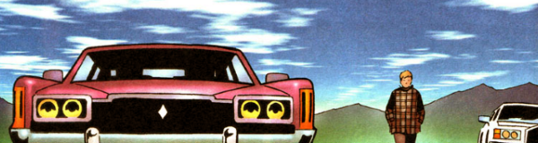

A straight adaptation of the movie of the same name, which was a low impact, quirky road trip with only tenuous links to either sci-fi or fantasy (and therefore of questionable relevance in the prog).
Art by Steve Yeowell & Alan Craddock
| Story Title | Parts | Pages | w indicates a wraparound coverCovers | Year(s) | Issues | Writer | Artist | Colourist | Letterer |
|---|---|---|---|---|---|---|---|---|---|
| A Life Less Ordinary | 8 | + 8 credit pages48 | 1063: Photo by Darren Michaels 1 | 1997 | 1063-1070 | David Bishop John Hodgevarious | Steve Yeowell | Alan Craddock | Annie Parkhouse |
| >> Teasers << | |||||||||
| A Life Less Ordinary | 2 | 2 | 0 | 1997 | 1061-1062 | editorial | Photos.Darren Michaels | <-- | n/a |
| year | episodes | pages |
| 1987 | 0 | 0 |
| 1988 | 0 | 0 |
| 1989 | 0 | 0 |
| 1990 | 0 | 0 |
| 1991 | 0 | 0 |
| 1992 | 0 | 0 |
| 1993 | 0 | 0 |
| 1994 | 0 | 0 |
| 1995 | 0 | 0 |
| 1996 | 0 | 0 |
| 1997 | 8 | 48 |
| 1998 | 0 | 0 |
| 1999 | 0 | 0 |
| 2000 | 0 | 0 |
| 2001 | 0 | 0 |
| 2002 | 0 | 0 |
| 2003 | 0 | 0 |
| 2004 | 0 | 0 |
| 2005 | 0 | 0 |
| 2006 | 0 | 0 |
| 2007 | 0 | 0 |
Core comic strip data (excludes other content):